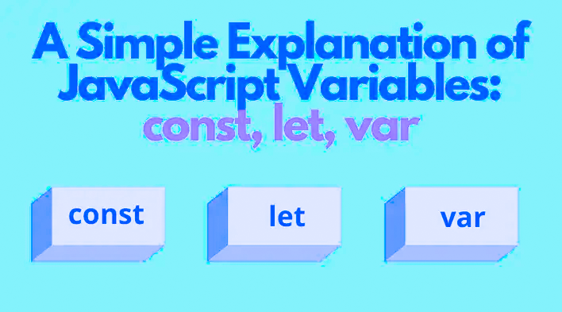

Variables

★ Variables:
JavaScript has a dynamic typing system where you don't need to declare the data type of a variable explicitly. The most commonly used data types in JavaScript are strings, numbers, booleans, null, and undefined.
- ➤ Variables are used to store data values in JavaScript.
- ➤
You can declare a variable using the "var", "let", or "const" keywords.
- ➤
Variables declared with "var" or "let" can be reassigned to a new value, while variables declared with "const" cannot be reassigned.
- ➤
Variables can be assigned a value using the "=" operator.
- ➤
JavaScript uses dynamic typing, which means that the data type of a variable is determined at runtime based on the value assigned to it.
Variable names can contain letters, numbers, underscores, and dollar signs, but cannot start with a number.
- ➤
JavaScript uses dynamic typing, which means that the data type of a variable is determined at runtime based on the value assigned to it.
- ➤
Variable names can contain letters, numbers, underscores, and dollar signs, but cannot start with a number.
★ Data Types:
- ➤
JavaScript has several built-in data types, including strings, numbers, booleans, null, undefined, and objects.
- ➤
Strings are used to represent text and are enclosed in either single or double quotes.
- ➤
Numbers can be either integers or decimals and can be positive or negative.
- ➤
Booleans represent a logical value of either true or false.
- ➤
Null represents the intentional absence of any object value.
- ➤
Undefined represents the absence of a defined value.
- ➤
Objects are used to represent more complex data structures and can contain multiple values of different data types.
- ➤
JavaScript also has a special data type called "NaN", which stands for "Not a Number" and is returned when a mathematical operation cannot be performed.